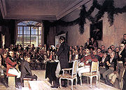

Eidsvoll
Demo of: footnote, importxml
Eidsvoll is situated at the southern end of Mjøsa1Mjøsa is the greatest lake in Norway and about 100km north of Oslo2Oslo is the capital of Norway.
The assembly that adopted a constitution based on American and French models, and elected the Danish crown prince Christian Fredrik as king was assembled in Eidsvoll in 1814. May 17 is the Norwegian national day.

The 1814 constitutional assembly, painted by Oscar Wergeland.
- Mjøsa is the greatest lake in Norway
- Oslo is the capital of Norway